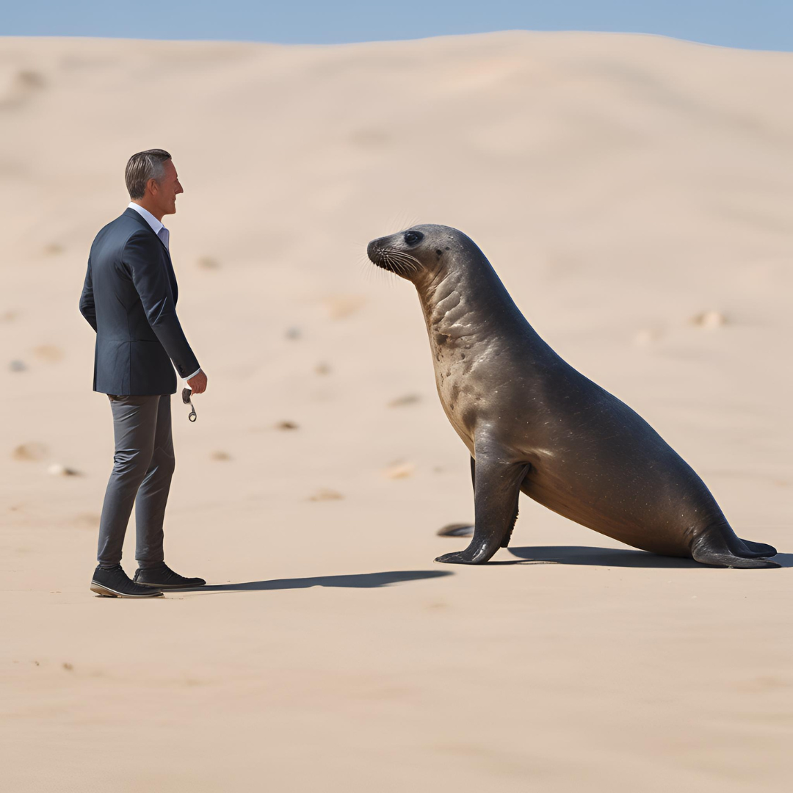
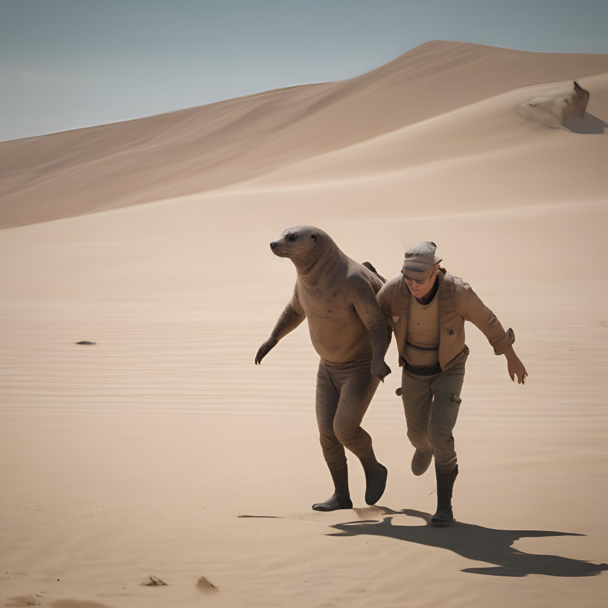
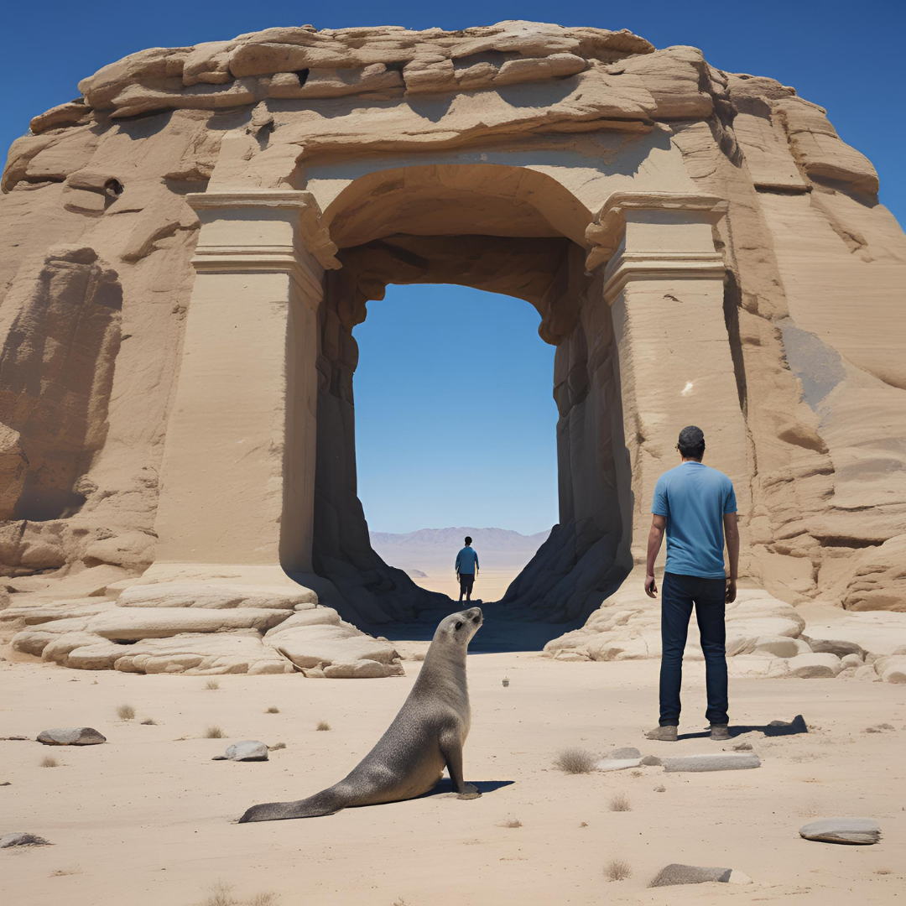

사막물개 마을의 위기
옛날 옛적 사막 한가운데 작은 오아시스가 있었다. 그 오아시스에는 사막물개라 불리는 특별한 생명체들이 살고 있었다. 사막물개는 물과 육지를 자유롭게 오가며 살아가는 존재였다. 어느 날, 사막에 큰 가뭄이 찾아와 오아시스의 물이 점점 줄어들기 시작했다.
예상치 못한 만남
오아시스에서 살아가던 사막물개의 리더 디저트는 큰 가뭄을 해결하기 위해 생명의 샘을 찾아 떠났다. 같은 시기, 고태현은 알 수 없는 실험을 조사하던 중 사막으로 향했다. 그의 연구는 사막의 생명력에 대한 비밀을 밝히는 것이었다.
여정의 교차
디저트와 태현은 사막 한가운데서 우연히 마주쳤다. 태현은 디저트를 처음 보았을 때 놀라움을 감추지 못했지만, 곧 그가 전설의 생명체라는 것을 깨닫고 호기심이 생겼다. 두 사람은 서로의 목적을 이야기하며 힘을 합치기로 했다. 디저트는 생명의 샘을 찾고, 태현은 그의 연구를 완성하고자 했다.
위험한 동행
둘은 생명의 샘을 찾기 위해 협력했다. 사막의 뜨거운 태양 아래에서 서로를 돕고, 모래폭풍을 함께 이겨내며 그들은 점점 더 가까워졌다. 디저트는 태현에게 사막의 생존 비법을 전수했고, 태현은 그의 과학 지식을 공유했다. 그들은 길을 가면서 많은 어려움을 겪었지만, 서로의 존재가 큰 힘이 되었다.
희생과 용기
여정 중 디저트와 태현은 위험에 처한 사막의 다른 생명체들을 도왔다. 디저트는 용감하게 사나운 맹수들로부터 작은 동물들을 구했고, 태현은 그의 지식을 활용해 부상을 치료했다. 그들의 행동은 다른 생명체들에게도 큰 희망이 되었다.
생명의 샘 발견
마침내, 두 사람은 생명의 샘에 도착했다. 샘은 맑고 푸른 물로 가득 차 있었고, 주변에는 푸른 식물들이 무성했다. 디저트는 마을로 돌아가기 위해 샘에서 물을 퍼 담았다. 태현은 그 샘의 물이 인류에게 중요한 비밀을 담고 있다는 것을 깨달았다. 그 물은 놀라운 치유력을 가지고 있었고, 태현은 그 물의 샘플을 가져가 연구하기로 했다.
이별과 새로운 시작
생명의 샘에서 얻은 물로 디저트는 오아시스 마을을 구할 수 있었고, 태현은 실험의 비밀을 밝혀낼 수 있었다. 그들은 서로의 길을 가기 위해 작별을 고했지만, 이 만남은 그들의 인생에 큰 변화를 가져왔다. 디저트는 마을의 영웅이 되었고, 태현은 그의 연구로 과학계에서 큰 주목을 받게 되었다.
미스터리한 유적
디저트와 태현은 헤어진 후, 사막 한가운데서 신비한 유적을 발견했다는 소식을 듣게 되었다. 두 사람은 다시 만날 것을 약속하고 유적을 조사하기 위해 모험을 떠났다. 유적에는 고대 문명의 흔적과 신비한 에너지가 숨겨져 있었다.
유적의 비밀
그들은 유적에서 고대 문명과 관련된 흔적을 발견했다. 이 문명은 사막의 비밀을 알고 있는 듯했다. 디저트와 태현은 유적을 탐험하며, 잃어버린 역사를 되찾기 위해 노력했다. 유적의 벽에는 고대의 상형문자가 새겨져 있었고, 그것을 해독하는 과정에서 놀라운 사실들을 알게 되었다.
고대의 힘
유적의 깊숙한 곳에서, 그들은 특별한 유물을 발견했다. 이 유물은 생명의 샘과 연관이 있었고, 그 비밀을 풀 수 있는 열쇠였다. 유물은 고대 문명이 사용하던 강력한 에너지를 담고 있었으며, 그것을 사용하면 사막을 다시 푸르게 만들 수 있다는 전설이 있었다. 디저트와 태현은 이 유물을 통해 세상을 더 나은 곳으로 만들기로 결심했다.
새로운 모험의 시작
디저트와 태현은 유물을 통해 새로운 힘을 얻었고, 그 힘으로 세상을 변화시켰다. 그들의 모험은 끝나지 않았고, 앞으로도 많은 도전과 미스터리가 기다리고 있었다. 두 사람은 서로를 믿으며 새로운 모험을 시작했다. 이들은 고대의 지식을 활용하여 사막을 푸르게 만들기 위한 계획을 세웠고, 그 과정에서 새로운 동료들을 만나게 되었다.
동료와의 만남
새로운 여정에서 디저트와 태현은 다양한 배경을 가진 동료들을 만났다. 그들은 각자 특별한 능력과 지식을 가지고 있었으며, 함께하는 여정은 더욱 흥미로워졌다. 동료들은 사막의 재건을 위해 힘을 합쳤고, 고대의 비밀을 풀어가는 과정에서 서로의 신뢰가 깊어졌다.
사막의 재건
디저트, 태현, 그리고 새로운 동료들은 고대 유물을 사용하여 사막을 푸르게 만들기 위한 프로젝트를 시작했다. 그들은 사막에 생명력을 불어넣기 위해 다양한 시도를 했고, 점차 사막의 일부가 푸른 초원으로 변해갔다. 이 과정에서 그들은 많은 어려움을 겪었지만, 서로의 지혜와 용기로 문제를 해결해 나갔다.
미래를 향한 희망
사막을 푸르게 만드는 프로젝트가 성공적으로 진행되면서, 디저트와 태현은 새로운 희망을 품게 되었다. 그들은 사막의 다른 지역에도 이 프로젝트를 확장하기로 결심했다. 이들은 사막의 변화를 지켜보며, 더 나은 미래를 위한 준비를 계속해 나갔다. 그들의 여정은 끝이 없었고, 앞으로도 많은 도전과 모험이 기다리고 있었다.